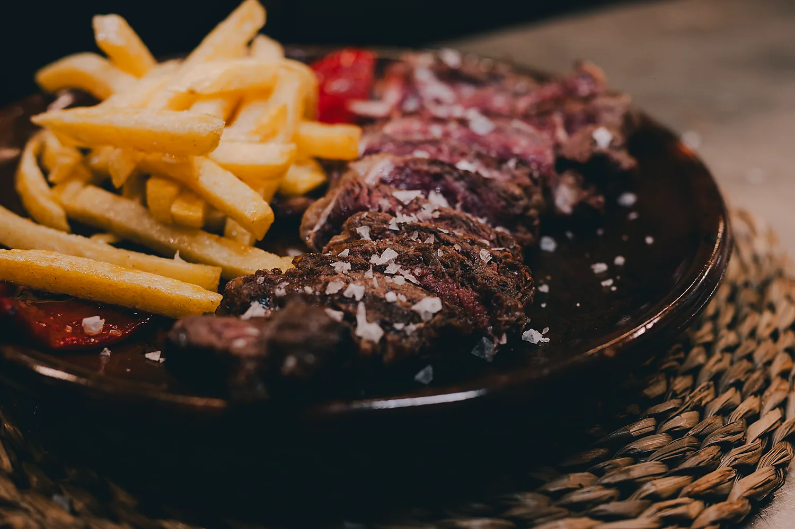
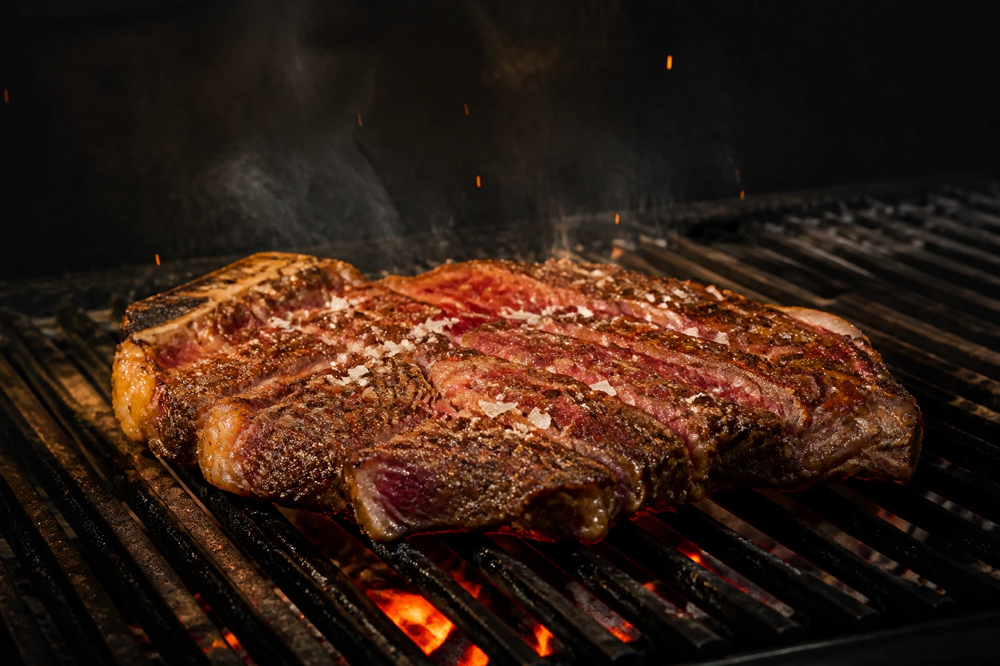
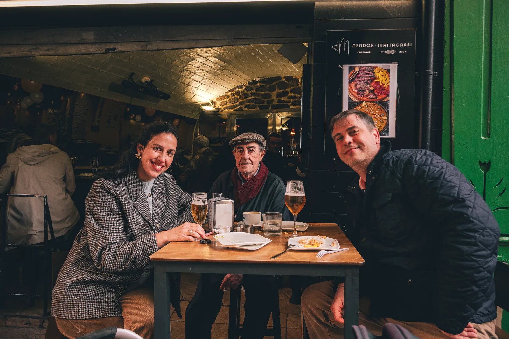
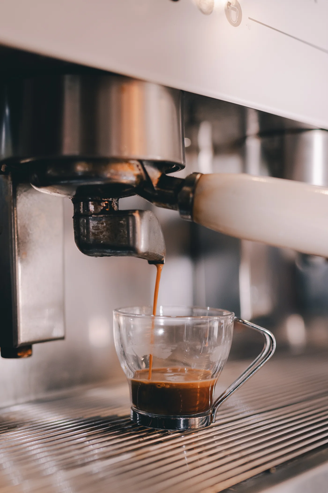

ASADOR · PAMPLONA
ASADOR · PAMPLONALa esencia de Maitagarri
Maitagarri, un asador.
Brasa, barra y mesa.
Un restaurante asador en el Casco Viejo de Pamplona para comer, compartir y encontrar un sitio al que volver.
Una cocina reconocible
La cocina empieza
en el producto.
En Maitagarri no hace falta disfrazar lo que funciona: buen producto, fuego y una carta pensada para compartir alrededor de la mesa.
Consultar carta y menús ↗


El lugar también cuenta
La sala, la barra
y la calle.
Maitagarri está en Mercaderes, en pleno Casco Viejo. La sala, la barra y la vida de Pamplona forman parte de la experiencia.


Maitagarri en televisión
Pamplona en la puerta.
Maitagarri dentro.
Un instante real del asador durante San Fermín: la barra, el producto y la ciudad compartiendo el mismo pulso.
Ver San Fermín 2027 ↗Antes de venir
Lo que quieres saber
antes de venir.
¿Qué tipo de restaurante es Maitagarri?
Un restaurante asador en el Casco Viejo de Pamplona, especializado en carne a la brasa, chuletón, pinchos y cocina navarra.
¿Dónde está el asador Maitagarri?
En Calle Mercaderes, 16, 31001 Pamplona/Iruña, a pocos pasos de los principales recorridos del Casco Viejo.
¿Se pueden reservar cenas de empresa?
Sí. Puedes solicitar una mesa para cenas de empresa, Navidad, Nochevieja y otras celebraciones desde el formulario de reservas.
Cuando quieras venir